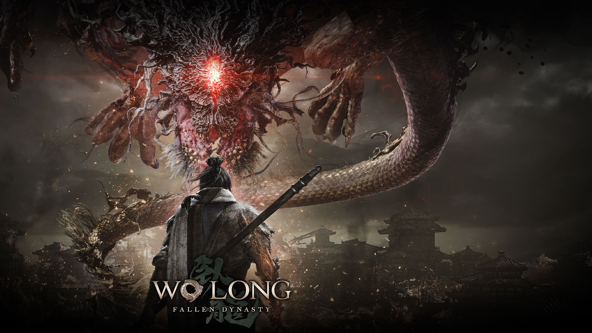
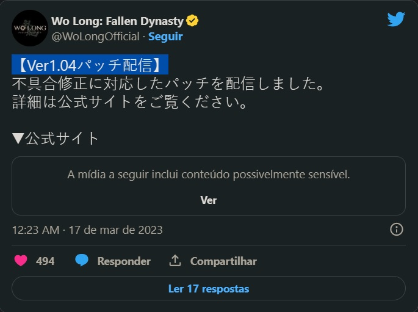

Wo Long: Fallen Dynasty ganha atualização
Nova atualização!
Através do seu Twitter oficial, a desenvolvedora Team Ninja confirmou que o Wo Long: Fallen Dynasty ganhou uma nova atualização.
Segundo a Team Ninja, a nova atualização do Wo Long: Fallen Dynasty trouxe várias correções de bugs e melhorias de performance. Além das correções, novos recursos, como o reabastecimento automático de projéteis em determinadas áreas, foram adicionados. Clique aqui para ler as notas de patch (em japonês).Confira:
fonte: Central Xbox
